Case 02 — Corporate Website · KR / EN
Noul
소량의 혈액만으로 실험실 수준의 진단을 해내는 바이오 기업 노을. 전문가의 언어로만 설명되던 기술을, 처음 보는 사람도 이해하고 믿을 수 있는 이야기로 다시 짰습니다.
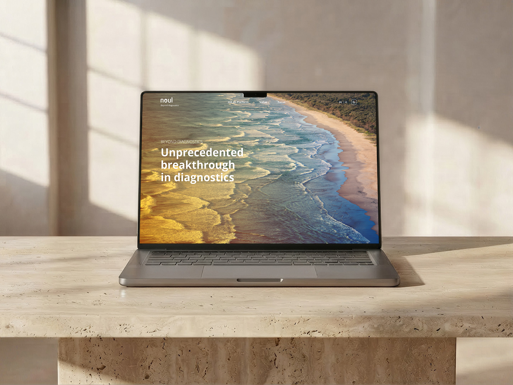
Main — Unprecedented breakthrough in diagnostics
01 — Overview
실험실 안에만 있던 진단 기술을, 처음 보는 사람도 이해하고 믿을 수 있는 이야기로 바꾸는 일이었습니다.
Context
노을은 고체 기반 염색 기술(NGSI)과 온보드 AI를 하나의 장비에 담은 진단 플랫폼 miLab™을 만듭니다. 인프라가 부족한 지역에서도 실험실 수준의 혈액 진단을 가능하게 하는 기술이지만, 기존 사이트에서는 그 가치가 전문 용어와 긴 문단 속에 묻혀 있었습니다.
My Part
3명의 디자인팀에서 아트디렉션을 맡아 콘셉트와 키 비주얼을 정하고, 국문 · 영문 7개 템플릿의 UX/UI를 직접 디자인했습니다. 기술 시각화 시안으로 클라이언트를 설득했고, 오픈 이후에는 노을 사내 브랜드 디자이너와 함께 고도화를 이어 갔습니다.
Information Architecture
3 GNB / 7 Templates / Desktop 1440 · Mobile 360
- M00
Index
- Hero · Key Visual
- miLab Intro
- Platform · Voices
- News · Team
- Partners
- P01
miLab Platform
- NGSI Cartridge
- miLab Device
- Onboard AI
- miView
- Technologies
- P02
Value
- Gold Standard
- Cost Efficiency
- Resource-poor
- Surveillance
- P03
Focus
- Malaria
- Blood Cell
- Cancer
- IHC
- S01
Who we are
- Mission
- Approach
- History
- Global Offices
- S03
Sustainability
- Circle
- Innovation
- SDGs
- Impact
- S04
Careers
- Culture
- Process
- Openings
- Detail
GNB 상시 노출 햄버거 메뉴 (Company)
02 — Problem → Answer
정보를 덜어내지 않고,
읽히게 만드는 법.
클라이언트가 담고 싶은 내용은 많았고, 대부분이 줄일 수 없는 기술 정보였습니다. 그래서 분량을 줄이는 대신 ‘어떤 형식으로 보여 줄 것인가’를 세 가지 원칙으로 정리했습니다.
-
01 · ComplexityNGSI · 디지털 이미징 · 온보드 AI — 전문가가 아니면 이해할 수 없는 기술
문장 대신 구조를 보여 준다. 장비를 분해한 3D 렌더 위에 핫스팟을 얹어, 부품을 하나씩 짚으며 기술을 설명하는 인터랙션으로 바꿨습니다.
-
02 · Trust“더 정확하다”, “더 저렴하다”는 주장만으로는 믿음이 생기지 않는다
숫자 → 사람의 목소리 순서로. 정확도 · 비용을 막대와 원형 차트로 먼저 보여 주고, 바로 아래에 연구자와 의사의 인용을 붙여 근거를 이중으로 쌓았습니다.
-
03 · Value기술 기업이자, 의료 접근성을 넓히려는 임팩트 기업이라는 정체성
차가운 기술에 온도를 입힌다. 사명 ‘노을’에서 출발한 따뜻한 주황과 자연의 풍경을 키 비주얼로, 신뢰의 네이비를 정보 영역의 바탕으로 나눠 썼습니다.
03 — Concept
Noul,
the color of dusk.
사명 ‘노을’은 하루의 끝이 아니라, 새로운 시작을 비추는 빛입니다.
브랜드 컬러 #EA5504가 노을빛에서 왔다는 점에서 출발했습니다. 진단 기업의 히어로가 흔히 쓰는 세포 · 실험실 이미지 대신, 수평선과 물결처럼 ‘아직 가 보지 않은 곳’을 떠올리게 하는 풍경으로 ‘Beyond diagnostics’를 말하고자 했습니다. 같은 레이아웃 위에서 다섯 방향을 비교했습니다.
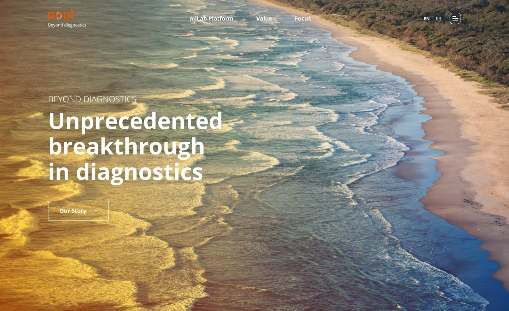
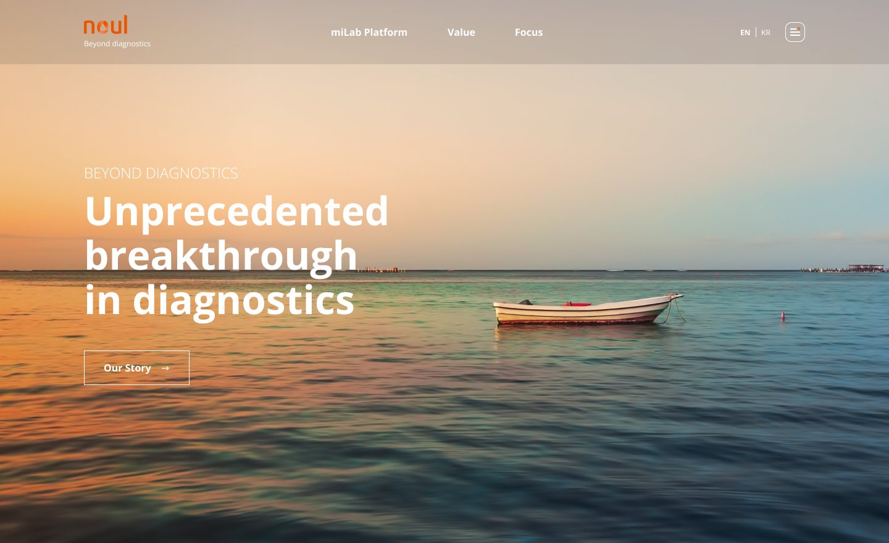
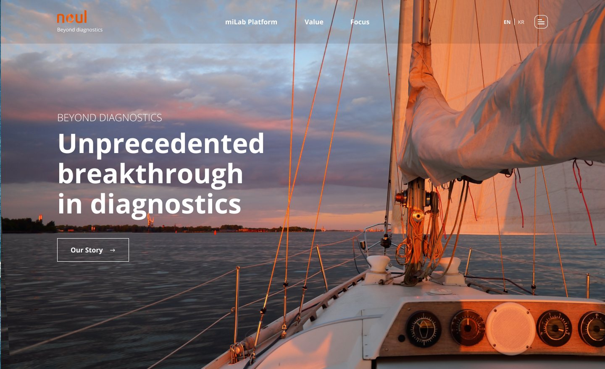
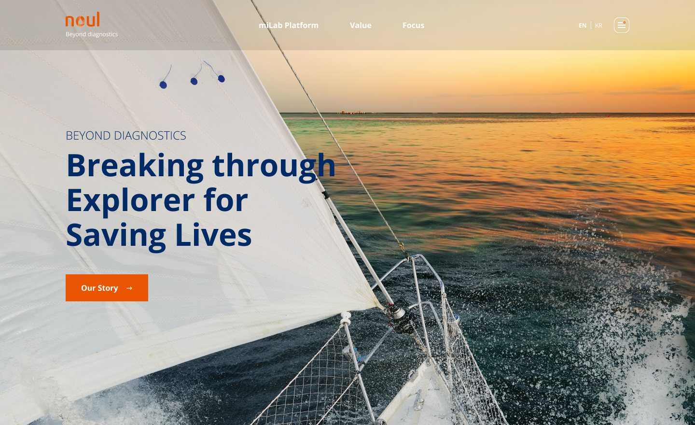
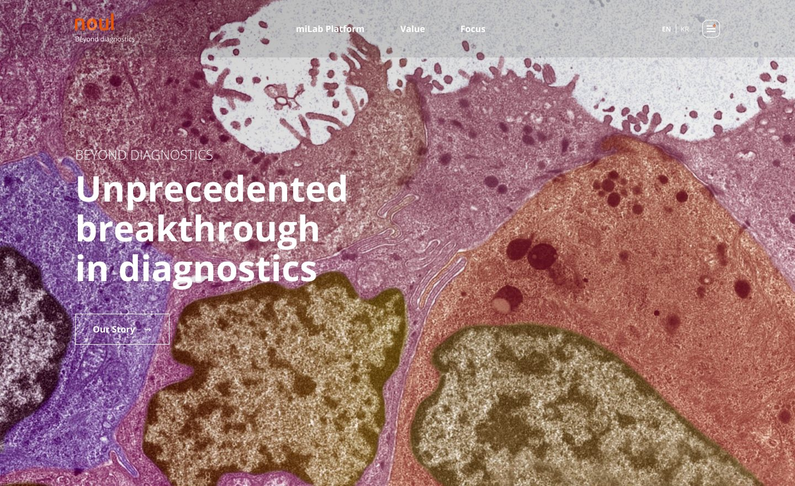
- Why Coast
- 노을의 주황 · 바다의 청록이 한 장에 함께 담겨 브랜드 컬러와 정보 영역의 네이비를 자연스럽게 잇는 유일한 안
- Why not Cell
- 기술은 정확히 보여 주지만 ‘또 하나의 실험실’로 읽혀, 접근성이라는 메시지와 멀어짐
- Rule
- 모든 안에서 헤드라인 위치 · 크기 · CTA를 고정해 ‘이미지’만 비교되게
04 — Main Page
스크롤 한 번에,
기술 → 근거 → 사람.
메인은 ‘무엇을 만드는가’에서 ‘왜 믿을 수 있는가’, ‘누가 만드는가’로 흐르도록 섹션 순서를 짰습니다. 배경색도 화이트 → 네이비 → 화이트 → 아프리콧으로 바꿔, 긴 페이지에서도 지금 어떤 이야기를 읽고 있는지 색으로 구분되게 했습니다.
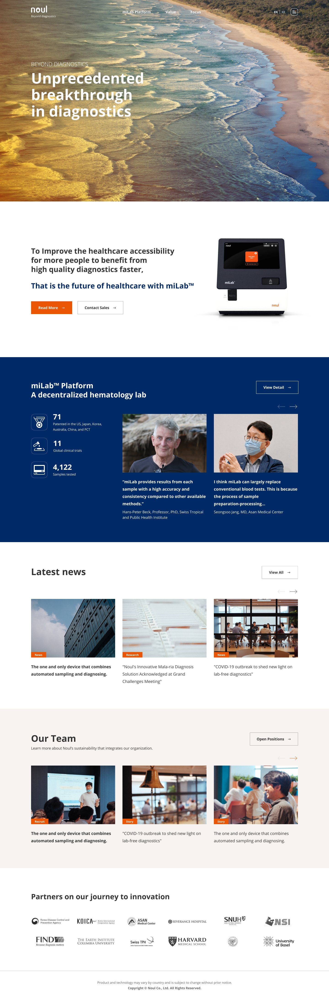
- A
비전은 한 문장으로. 히어로 다음에 긴 소개 대신 “더 많은 사람이 더 빨리, 높은 품질의 진단을”이라는 문장과 장비 한 컷만 둬 첫인상을 정리했습니다.
- B
숫자 옆에 사람. 네이비 섹션에서 특허 71 · 임상 11 · 검체 4,122의 지표와 연구자 인용 카드를 한 줄에 배치해, 수치와 증언이 함께 읽히게 했습니다.
- C
카드는 하나의 규칙으로. News · Team 카드는 이미지 좌하단의 주황 라벨(News · Research · Recruit · Story)만 바꿔 같은 컴포넌트로 운영했습니다.
- Hero키 비주얼 · Our Story
- miLab한 문장 비전 + 제품
- Platform숫자 3개 · 전문가 인용
- News카테고리 라벨 카드
- Team채용 · 스토리
- Partners파트너 로고 12
05 — Visualize
보이지 않는 기술을
분해해서 보여 주기.
‘세계 최초의 완전 자동화 진단 장비’라는 말을 증명하려면 안을 열어 보여 주는 게 가장 빨랐습니다. 장비를 네 개의 기술 모듈로 분해한 렌더를 만들고, 한 번에 하나의 모듈만 진하게 남겨 설명이 흩어지지 않게 했습니다. 아래 탭으로 실제 화면의 4단계를 확인할 수 있습니다.
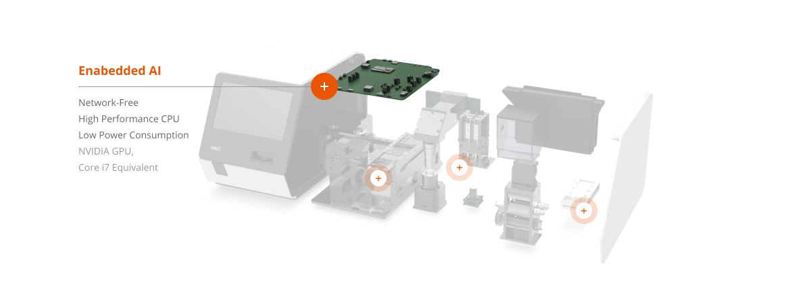
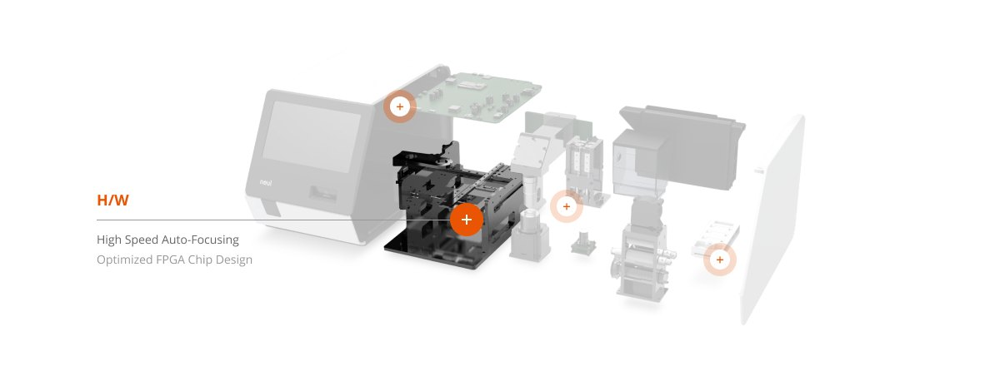
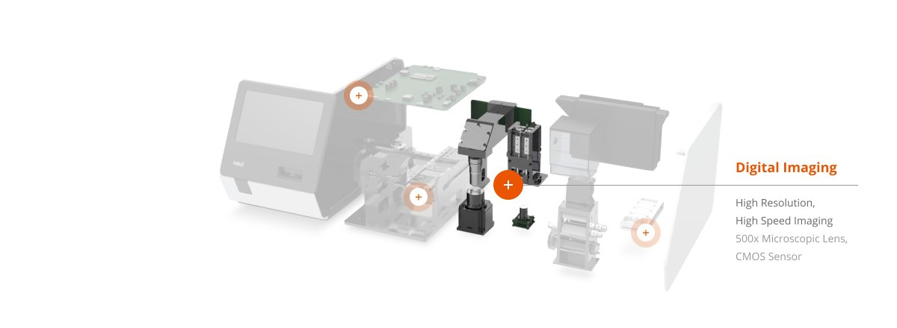
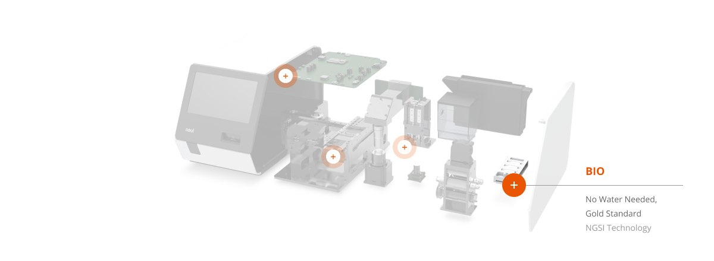
제품 페이지는
‘하나의 장비, 네 개의 장면’.
miLab Platform 페이지는 카트리지 → 장비 → AI → 뷰어 순서로, 검체가 실제로 이동하는 경로를 따라 내려가도록 구성했습니다. 각 장면은 ‘한 줄 수식어 + 제품명 + 4개의 특징’이라는 같은 틀을 반복해, 처음 보는 기술이 연달아 나와도 읽는 방법은 바뀌지 않게 했습니다.
- 01NGSI® CartridgeAll-in-one
- 02miLab DeviceThe smallest lab
- 03Onboard AI100× more precise
- 04Cell viewer, miViewAnytime, anywhere
06 — Evidence
주장 대신,
숫자로 먼저.
Value 페이지의 네 가지 가치(정확도 · 비용 · 접근성 · 감시)는 모두 ‘데이터 시각화 → 전문가 인용 → Read more’의 같은 순서로 설계했습니다. 아래 차트는 실제 페이지의 수치를 코드로 다시 그린 것입니다.
01 · Perfect Gold Standard
Accuracy of Diagnosis
02 · Complex workflow simplified
Where the cost goes
- Technician labor55%
- Doctor labor18%
- Device purchase18%
- Etc.5%
- Maintenance4%
혈액 검사 비용의 70% 이상이 사람의 손에서 나온다는 사실을 한 장의 원으로. 자동화의 가치가 설명 없이 읽힙니다.
03 · Lab-grade diagnosis in resource-poor settings
- Liquid · 500mlFREE
- Specialist · Technician & doctorFREE
- Infrastructure · Water, ventilator, microscopeFREE
“miLab provides results from each sample with a high accuracy and consistency compared to other available methods.”
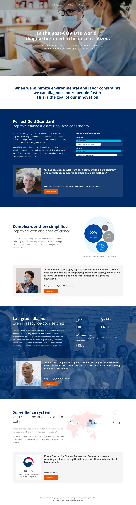
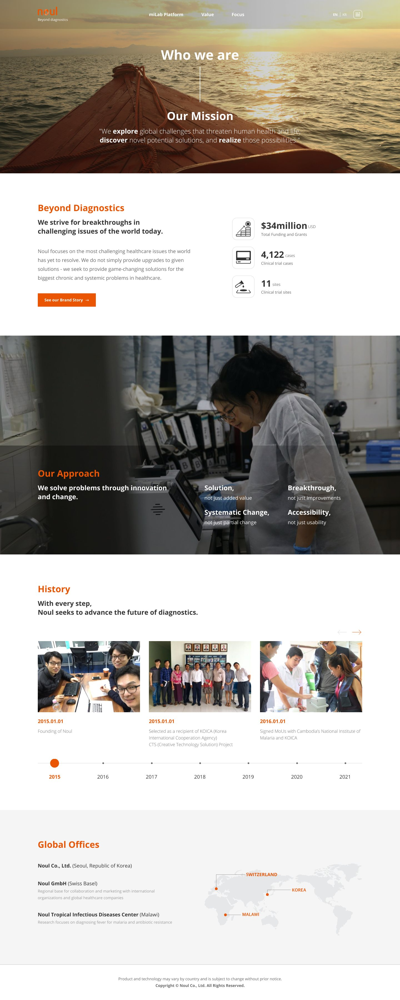
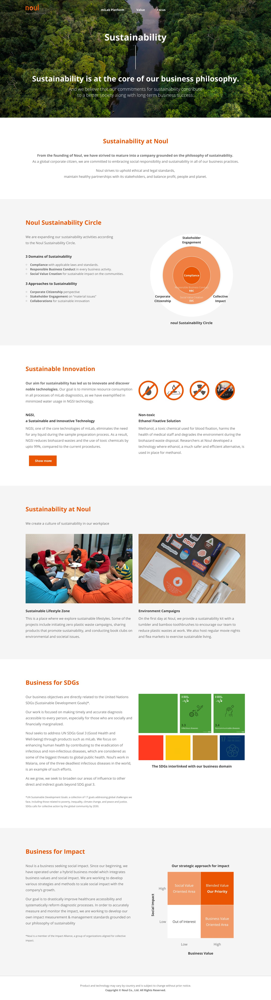
07 — Design System
두 개의 언어,
하나의 라이브러리.
국문과 영문은 글자 폭과 줄 길이가 달라 같은 레이아웃에서도 쉽게 무너집니다. 그래서 화면보다 먼저 NOUL-Library를 만들고 Typographic · Color · Board · Button · Icon · Form · Label · Layout · Symbol 9개 페이지로 정리해, 7개 템플릿이 모두 이 라이브러리를 참조하게 했습니다.
Color — NOUL-Library
#EA5504
- Dark Navy
#002A66 - Navy
#0046A5 - Sky
#0073DA - Pure Sky
#00BCF0 - Yellow
#FFD400 - Brown
#5C5550 - Light Brown
#8D857F - Apricot
#F7F3F0
주황은 CTA · 라벨 · 진행 표시처럼 ‘행동’에만, 네이비는 데이터 · 인용처럼 ‘신뢰’가 필요한 면에만. 브라운 계열은 회사 · 문화 페이지의 따뜻한 바탕으로 분리했습니다.
Typography — Noto Sans CJK KR · Open Sans
- D1NGSI Cartridge
- H1Breakthrough in diagnostics
- H1 KR노을은 인류의 건강과 생명을
- H2_LImprove diagnostic accuracy
- H4Global clinical research
- P1–P5Entire blood sample preparation process is automated in a single micro NGSI Cartridge.
영문 서체는 Ubuntu · Open Sans · Roboto 세 후보를 같은 스케일(D1–P5)로 나란히 비교한 뒤, 국문 Noto Sans 옆에 두었을 때 가장 자연스럽게 섞이는 Open Sans로 정했습니다. 제목은 Bold, 부제는 Light로 굵기 대비를 크게 가져갔습니다.
Components
71Patented in the US, Japan, Korea, Australia, China and PCT
Layout — 1440 / 1168 / 136
1440 캔버스에 좌우 136px 여백 · 본문 1168px. 2단은 568 + 32 + 568로 고정해 국문 · 영문이 같은 줄 위치에서 시작하게 했고, 모바일은 360에 16px 여백 한 단으로 접습니다.
08 — Mobile
작은 화면에서는
한 번에 하나씩.
데스크톱의 2 · 3단 카드는 모바일에서 한 장씩 넘기는 캐러셀로, 좌우 분할 텍스트는 위아래로 쌓았습니다. 숫자 · 인용 · 차트처럼 정보 밀도가 높은 영역은 순서를 바꾸지 않고 폭만 좁혀, 데스크톱과 같은 흐름으로 읽히게 했습니다.
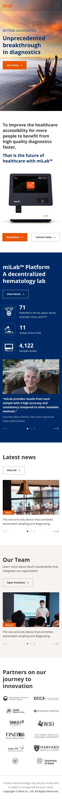
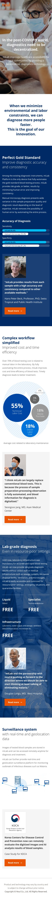
09 — Outcome
설득은 말이 아니라
시안으로 했습니다.
- Lead아트디렉션 · 웹디자인 리드
키 비주얼 · 템플릿 · 디자인 시스템 · 브리핑 - 7tpl페이지 템플릿
× 국문 · 영문 × PC · MO - 5KV메인 키 비주얼
비교 시안 - 9pgNOUL-Library
디자인 시스템 페이지
What worked
담고 싶은 내용이 많은 클라이언트에게 ‘줄이자’고 말하는 대신, 같은 정보를 차트 · 분해도 · 인용으로 바꾼 시안을 여러 갈래로 먼저 보여 줬습니다. 치열한 브리핑 끝에 정보를 지키면서도 쉽게 읽히는 방향에 함께 합의할 수 있었습니다.
After launch
오픈 이후에는 노을 사내 브랜드 디자이너들과 리서치 · 레퍼런스를 함께 검토하며 고도화를 진행했습니다. 처음 세운 라이브러리 덕분에 구조의 원칙은 지키면서 비주얼의 완성도만 끌어올릴 수 있었습니다.